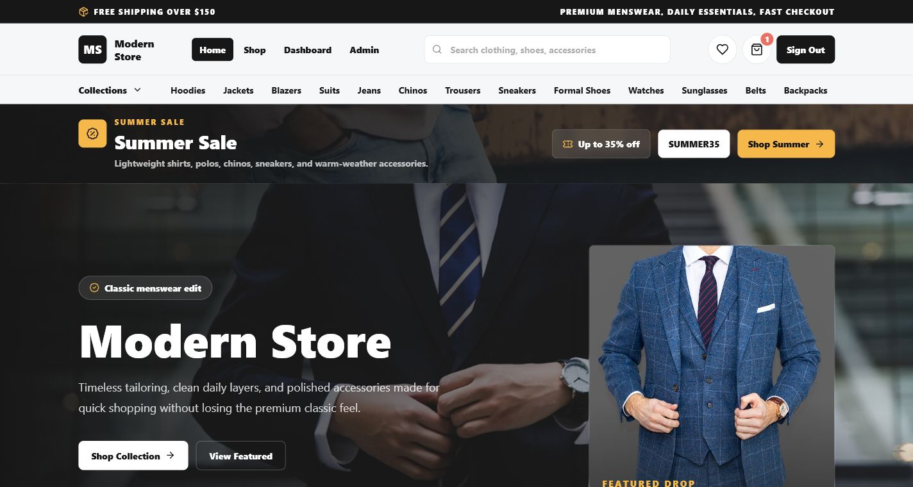

Junaid
Junaid 
MERN React
React Node.js
Node.js MongoDB
MongoDB
Modern Animated MERN E-Commerce Store
Full-stack menswear store with product catalog, cart, checkout, JWT-ready auth flow, user dashboard, and admin dashboard for products, categories, orders, sales, coupons, stock, banners, profit/loss, returns, and notifications.
14 screenshots162 product demo catalogResponsive mobile views